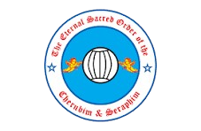
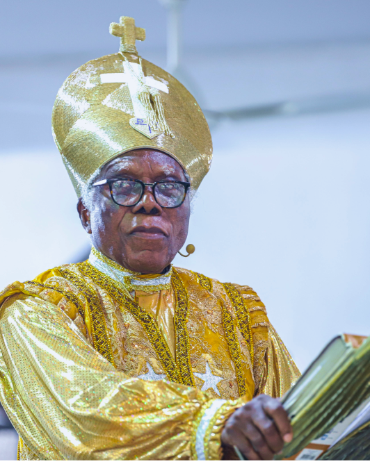

Joint Prayers at the Wilderness
Joint Prayers at the wilderness Preparatory Prayer
to Fasting
22nd February, 2026
40 Days Lenten Season
A Season of Lent (24th, February to 4th, April 2026)

THE ETERNAL SACRED ORDER OF THE
CHERUBIM AND SERAPHIM
Our Core Value
F-Faith
L-Love
O-Orderliness
S-Service to Hmanity
Holiness
What to expect!!
Salvation for all through Jesus
Christ
Beliefs and History
To evangelise and to arouse the
African in Nigeria in particular
amd the whole world in particular
to the pratice of spiritual
Christian life.

Grace and peace be multiplied unto you in the precious name of our Lord and Savior Jesus Christ. Beloved, we are all witnesses to various excruciating challenges of last year that the whole world went through. From kidnapping to banditry, terrorism, armed robbery, herdsmen tragedy, killings to natural disasters which brought with it hunger and rendered millions of people homeless across the globe. Both low, high and mighty had their own full share of the catastrophes of last year. In the midst of all these despicable situations, God in His endless mercies kept us alive to see the new year.
God kept us alive for a purpose and the purpose is that we must begin to change our mindset and perception of living. We must begin to realise the emptiness and folly of our ephemeral struggles for power and position, unhealthy competition in the issues of life and punitive accumulation of wealth and power but show a little kindness to our neighbourhood and save a life for Christ. The only way to eternal freedom from the challenges of the world and peace in the world is to make Christ the foundation and Chief cornerstone of our being. Then shall the world be a better place for living. As you live through the year, I charge you to share love and show forgiveness as a virtue.
To us as a church, despite the several challenges that militated against the world economy, we celebrated our centenary as an organisation purposed to advance the gospel of Jesus Christ, confirming that the foundation of the church was built on our Lord Jesus Christ. It is therefore incumbent on us to reaffirm this commitment as we begin the journey of the new year with Christ as the foundation and chief cornerstone and bedrock of our faith, the nexus and the central pillar supporting every element of our life. There is no better time to state this assurance than this year which forms the beginning of our new century. As children of God, we should approach our faith and lives with focus on Christ as the central figure and foundation of our beliefs and actions. This is the key if we must live a victorious life, full of impact and kingdom purpose.
I have no doubt that the years ahead shall be tougher, given the trend of events around us. It is only Jesus Christ as our foundation that can see us through the trials and tribulations of this world as all other options have failed the world, but Christ as the foundation of the world and its chief cornerstone, there is hope for peace and salvation for mankind. I therefore, encourage you like saint Paul encouraged the Corinthian Christians, to remain steadfast, unmovable, focused on God, always abounding in the work of the Lord, for as much as ye know that your labor is not in vain in the Lord, 1 Corinthians 15:58.
I wish you all a very happy and prosperous new year 2026, as I commend you into God's hands, that you be sustained by His endless mercies.
Your praying father,
HIS MOST EMINENCE, BABA ALADURA DR. DAVID D. L. BOB-MANUEL MOSES ORIMOLADE IX & PRELATE OF THE ESOCS CHURCH WORLDWIDE
Stay connected and inspired with our upcoming events
Joint Prayers at the wilderness Preparatory Prayer
to Fasting
A Season of Lent (24th, February to 4th, April 2026)
Explore inspiring stories, faith-filled insights, and the lastest updates in our news and blog section
Media Launch and Unveiling of Centenary Logo,
Theme, Theme Song, Website, Social Media Handles &
Wor....
Centenary Sensitization/Familiarization of HME to key
personalities (Inviting them to Centenary Program)
Join us in Spreading hope and
joy! Plant your seed of love today
and help transform lives through
your generous giving.
Follow up on the word on the go or from anywhere in the world
Watch Live Sermons or recaps
here!
See pictures of previous events
and services here!